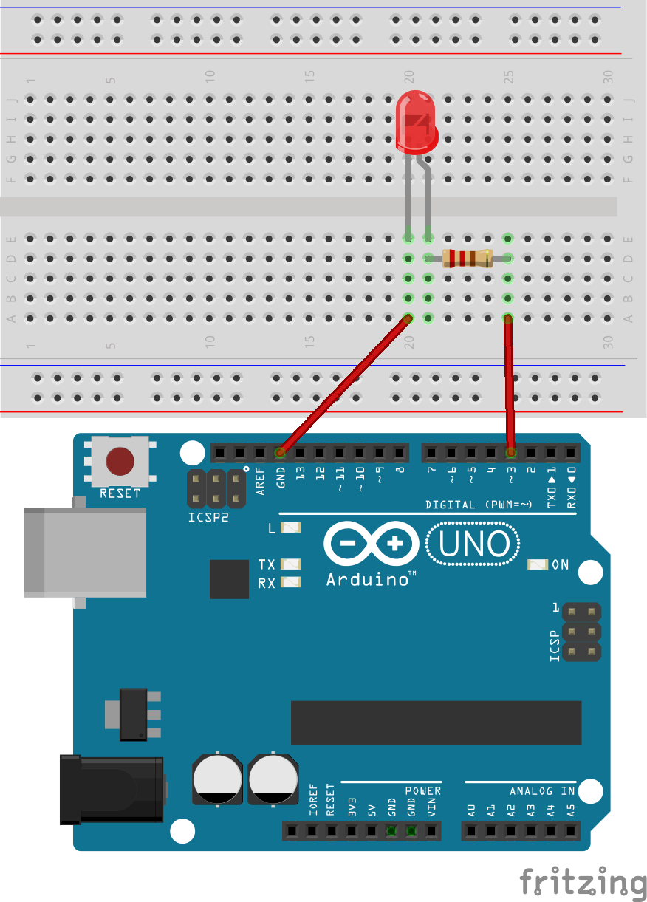

Digital input and analog output¶
Using digital inputs¶
Digital inputs have already been covered in detail in a previous lesson. In this lesson the focus is on how to best utilize the digital input signal in software.
Edge detection¶
When reading a digital input it is often desirable to determine the instant it is changing, and how it is changing. I.e. whether it is a rising, or a falling edge. There are several approaches we can take to solve this problem, but in this section we focus on solutions involving the sampling of the digital input. I.e. we are continuously checking the state of the digital input with a certain time interval. This approach is fine for slowly changing signals such as push buttons. Actually it is not only fine, it is often the recommended way to deal with slow signals.
In order to detect the rising edge of a digital input by the sampling method, we continuously compare the current state of the input, to the state at the previous iteration (the previous time we checked it). If the previous value was low, and the current value is high, we have a rising edge. The same logic can be applied it the reverse direction to detect the falling edge.
Todo
rising and falling edge detection example
Exercise: rising and falling edge detection¶
For this exercise you can use the following connections:

Write a program which detect the rising edge of a push button. The program should send the text “rising edge detected” to the serial port on each rising edge.
Extend the program to also detect the falling edge, and send the text “falling edge detected”.
Extend the program to toggle a LED on the rising edge.
Take note on how many rising and falling edge detected messages you receive each time you push the button. If you receive more than one message on each button push this is likely due to mechanical bouncing which is covered in the next section.
Extend the program to detect the rising and falling edge of a second push button.
Push button de-bouncing¶
Mechanical switches such as push buttons will often exhibit mechanical bouncing when they are connected. This is a relatively high frequency opening and closing of the contacts at the instant that they are supposed to close, or open. E.g. when you push a push button, the first connection instant will often be followed by several fast open close instants. Our microcontroller is more than capable of detecting these quick (but undesired) openings and closings of the switch, and may cause or software to detect multiple button events, when we only wanted one event.
For this reason we often have to include some form of switch de-bouncing algorithm in our software. It is also possible to use a hardware solution (e.g. a SPDT switch, and an RS-latch), but in this lesson we will only consider a simple software solution. It is usually much cheaper to do the de-bouncing in software, that it is do to it in hardware.
Todo
example which clearly demonstrate the bouncing problem
Todo
Add scope picture of voltage bounce of a button
A simple approach is to detect the rising (or falling) edge of the digital input, and then simply ignore any changes on the input for a short duration after the first change was detected. Alternatively we could detect a change in the input, wait, and check it again to see if it is stable. More sophisticated methods are also available, and will be demonstrated in a future lecture.
It should also be noted that it is possible to create a switch de-bouncing library which hides this details from the application. This however will also have to wait for a future lecture.
Exercise: push button de-bouncing¶
Write a program which toggles a LED on the rising edge of a push button. The program should also print a message on the rising edge.
Extend the program with the code required to avoid bouncing problems.
Pulse Width Modulation (PWM)¶
What is Modulation?
What is a pulse?
Note
Blackboard explanation.
Analog output¶
Analog output from a microcontroller (or any digital system) is performed by means of a Digital to Analog Converter (DAC). The Atmega328p of the Arduino UNO does not have a dedicated DAC built in to the device, but it has another feature which allows us to perform crude digital to analog conversion. The feature is known as pulse width modulation, and basically means that we are switching one of the digital outputs on and off quickly, but with variation in the durations the output stays high and low. This allows us to control the average output voltage. By using some external components for filtering, this pulsating voltage can be converted to a steady voltage with a value corresponding to the average of the PWM signal.
You may wonder why pulse width modulation is a special feature in the microcontroller, only available on some pins. As you know from the previous lessons, any GPIO pin is capable of switching between the two voltage states representing high, and low (5 V, and 0 V on the Arduino UNO). It is indeed possible to generate PWM on any GPIO, and there are examples on situations where switching a generic GPIO in this way is desirable. The problem is that this switching is controlled by the software, taking up a certain amount of the available CPU time. If the switching frequency is supposed to be high, it will leave little room for the microcontroller to be working on other tasks besides the PWM. Additionally having multiple PWM outputs in this way increases the load even further. For this reason dedicated hardware support for PWM in included on some pins of the microcontroller. You simply configure the PWM, and the output will be running continuously with your settings, until it is changed from software. The reason only some pins have PWM is simply to reduce cost, there are other more powerful microcontrollers which support PWM on any pin.
Operation of a pulse width modulator¶
In this section we will cover the basics of how the PWM-outputs on the Atmega328p are operating.
Todo
Figure from datasheet
The Arduino function associated with analog output signals that we will be using in this tutorial are:
The function in the Arduino library used to output a PWM signal is analogWrite(pin, value). pin is the pin number used for the PWM output. value is a number proportional to the duty cycle of the signal. When value = 0, the signal is always off. When value = 255, the signal is always on. On the Arduino UNO, the PWM function is available on pins 3, 5, 6, 9, 10, and 11. The frequency of the PWM signal on most pins is approximately 490 Hz. On the Uno and similar boards, pins 5 and 6 have a frequency of approximately 980 Hz. Pins 3 and 11 on the Arduino Leonardo also run at 980 Hz. The Arduino library does not support changing this frequency, but it is possible to do so by directly manipulating the registers of the Atmega328p hardware.
Mapping signals with different dynamic range¶
Suppose your input signal has a range of 0 - 1023, and you need to drive the PWM which expects a value of 0 - 255. The larger dynamic range input signal needs to be mapped to the low dynamic range parameter of the PWM control signal. In order to achieve this one may use the following generic equation, where x is the input, and y is the output signal:
For our example, this yields:
The Arduino library has a built in function for the mapping of one signal over to another with a different range. But as you have seen from the above example it might be just as easy to do the calculations on your own. Anyway the function definition in the library is as follows:
long map(long x, long in_min, long in_max, long out_min, long out_max)
{
return (x - in_min) * (out_max - out_min) / (in_max - in_min) + out_min;
}
Hence to map an analog input value, which ranges from 0 to 1023 to a PWM output signal, which ranges from 0 - 255, you can use the map(value, 0, 1023, 0, 255) function. This function has five parameters, one is the variable in which the analog value is stored, while the others are 0, 1023, 0 and 255 respectively.
The long variable type used it the function has the same size as int32_t.
Exercise: Adjusting the light intensity of LED¶
{kind=link}
In this exercise we will adjust the light intensity of a single LED by means of PWM.
Connect a LED in accordance with the figure. If you already have a LED connected, you only have to make sure it is connected to one of the pins which support PWM.
Write a simple test program where
analogWrite(pin, value)is used to control the pin connected to the LED. Try with various values for thevalue, e.g. 64, 128, 255.Extend the program so that a digital input connected to a push button changes the intensity of the LED. When you push the button it should change the duty-cycle from 64, to 128.
Exercise: Adjusting the light intensity of multiple LEDs¶
In this example we will be adjusting the light intensity of two LED’s connected to pin 5, and 6. A push button on pin 10 is used to step through various intensity levels.
{kind=link}
Note
Logic Analyzer, or scope demonstration.
Todo
Add solution after the lecture
Connect the push button, and the two LEDs in accordance with the schematic.
Write a program which toggles evenly between 5 levels of light intensity (from 0 to 255) by the pushing of the button. Both LEDs should have the same intensity, starting at 0, and ending at 255.
Extend the program such that after reaching maximum intensity, another push of the button resets the intensity back to 0.
Extend the program such that while one LED is stepping down, the other is stepping up in intensity. After reaching maximum (or minimum) intensity, the direction should change.